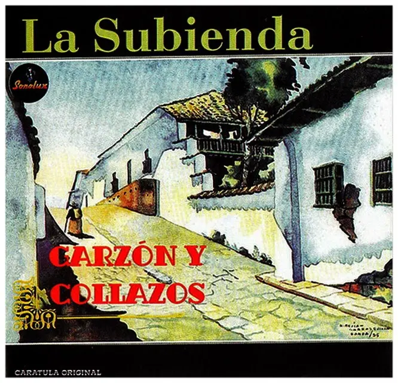
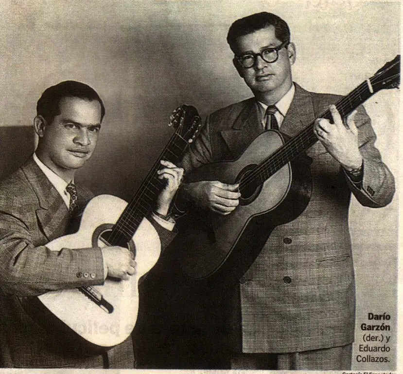
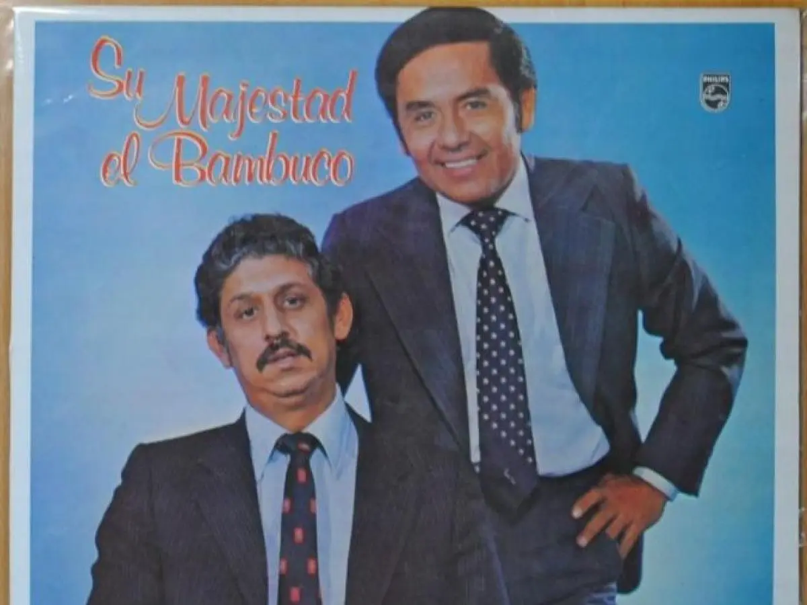
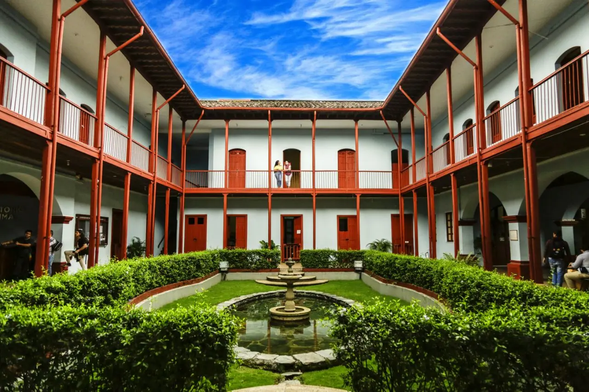
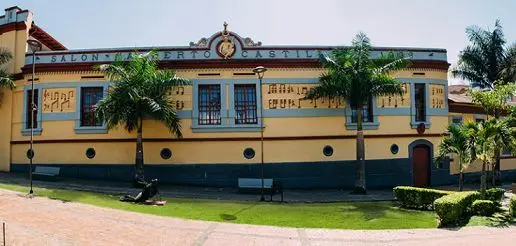
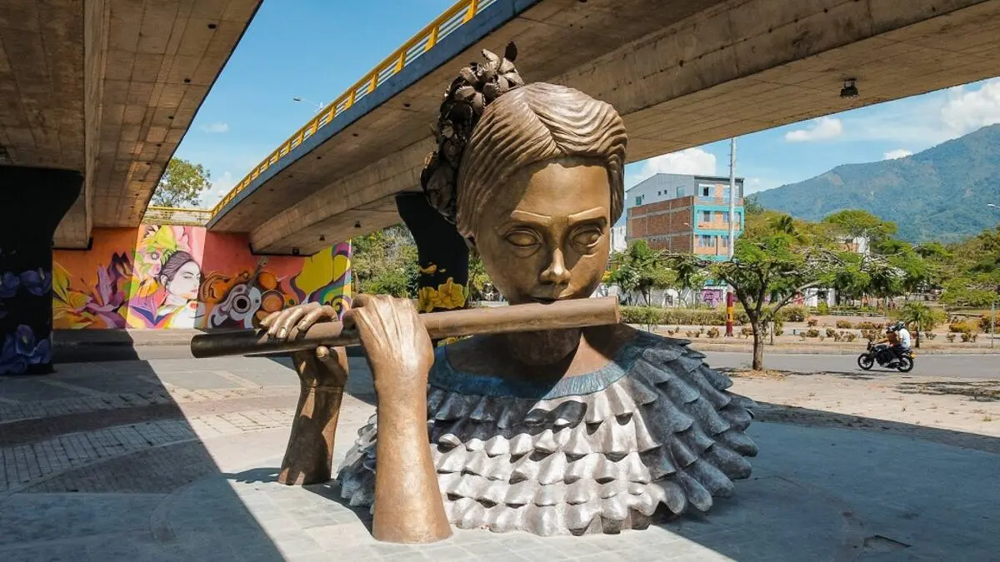
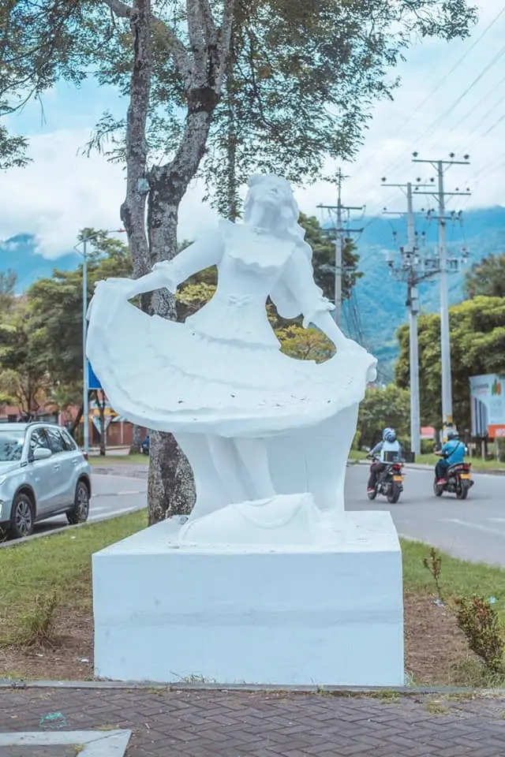

En la carátula: "Calle de Honda". Acuarela de Hernando Mejia Carrasquilla. Grabación digital a partir de las cintas analógicas originales. SONOLUX 1955
Durante el siglo XX, para los habitantes de Ibagué y del Tolima, la música fue una parte esencial de su identidad. Era común escuchar que ritmos como la guabina, el bambuco, el pasillo, la rajaleña, el torbellino y el bunde representaban la esencia cultural de la región, lo que llevó a que la ciudad fuera reconocida como la "Capital Musical de Colombia".
Sin embargo, la realidad es un poco más compleja. De todos estos ritmos, el único que tiene un origen propiamente tolimense es la caña, heredada de los pueblos indígenas pijaos. Otros ritmos tradicionales llegaron desde diferentes regiones del país. Por ejemplo, el torbellino y la guabina provienen de zonas como Santander y Boyacá, mientras que el pasillo tiene influencias europeas y fue muy popular entre las élites en el siglo XIX.

Fuente: Radio Nacional de Colombia(2018).
Por su parte, el sanjuanero y la rajaleña son expresiones musicales y dancísticas que se desarrollaron en el Tolima y el Huila. El sanjuanero es una variante del bambuco con influencias de los llanos, mientras que la rajaleña surge de cantos tradicionales de trabajadores en las haciendas, caracterizados por coplas y melodías sencillas.
El bambuco, uno de los ritmos más representativos del país, tuvo un papel importante en la construcción de la identidad musical colombiana durante el siglo XIX. Con el tiempo, todos estos sonidos se fueron integrando en la cultura tolimense.

Fuente: Radio Nacional de Colombia(2018).
Más que ser el lugar de origen de todos estos ritmos, Ibagué se consolidó como un punto de encuentro musical. Su ubicación estratégica permitió que por allí circularan diferentes tradiciones, sonidos y expresiones culturales, que fueron adoptadas y conservadas por sus habitantes.
De esta manera, la importancia musical de Ibagué no radica únicamente en la creación de ritmos propios, sino en su papel como escenario de encuentro, difusión y preservación del folclor andino colombiano.
En 1886, el conde Gabriac visitó Ibagué en su recorrido por el
paso del Quindío. Según escribió en sus crónicas de viaje, durante su estadía percibió la
inclinación de sus gentes por la danza y la música, así, doquiera que iba escuchaba
continuamente las melodías de guitarras y de flautas.
De manera detallada describe la fascinación hacia la música de los ibaguereños, quienes, sin importar si eran aficionados, artistas, enamorados o mendigos, acostumbraban a pasearse juntos y tocar bajo las ventanas de sus enamoradas.

Fuente: Conservatorio del Tolima
Conservatorio del Tolima
El edificio del Conservatorio de Música del Tolima fue construido en 1893, cuando funcionaba como la Escuela Normal de Varones. Posteriormente, fue remodelado en 1930. Su estructura original estaba hecha en madera y cubierta con tejas de barro cocido. En 1994, el Congreso de Colombia lo declaró Monumento Nacional mediante la Ley 112, reconociendo su importancia en la formación musical del país.

Fuente: Conservatorio del Tolima
Salón Alberto Castilla
El Salón Alberto Castilla fue construido en 1932. Su diseño estuvo a cargo de Helí Moreno Otero y su decoración fue realizada por Félix María Otálora. En su interior se encuentran 16 óleos del artista Domingo Moreno. En la fachada destaca un escudo de la República tallado en madera, acompañado de notas musicales, reforzando su identidad como espacio cultural. El escenario está decorado con detalles en yeso que incluyen los nombres de importantes figuras de la cultura nacional.

Fuente: Caracol Radio (2023)
La Flautista
La escultura de La Flautista, realizada por el artista Leonardo Fajardo, representa a una mujer interpretando este instrumento en homenaje al bambuco. Está ubicada en el lugar donde anteriormente se encontraba el monumento a la música y tiene como propósito resaltar el folclor y el papel de la mujer tolimense en la cultura.

Fuente: Alcaldía de Ibagué (2021).
La Bambuquera
La Bambuquera es una escultura creada por María Victoria Bonilla e instalada en 1993. Esta obra busca exaltar las raíces culturales de la región, especialmente la música del bambuco y las tradiciones representadas en el traje típico. Es un símbolo del folclor y la identidad tolimense.